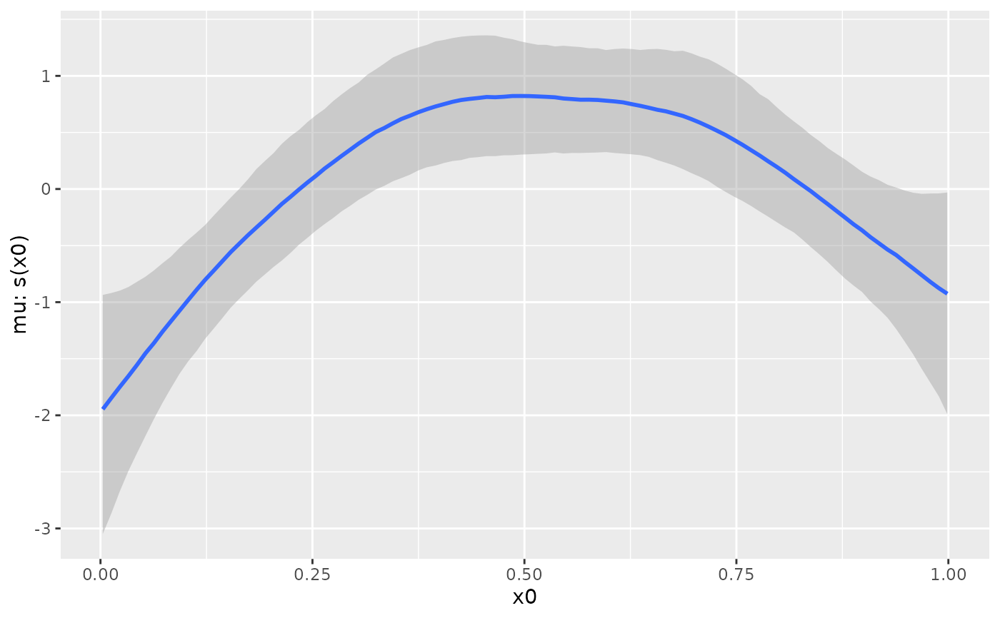
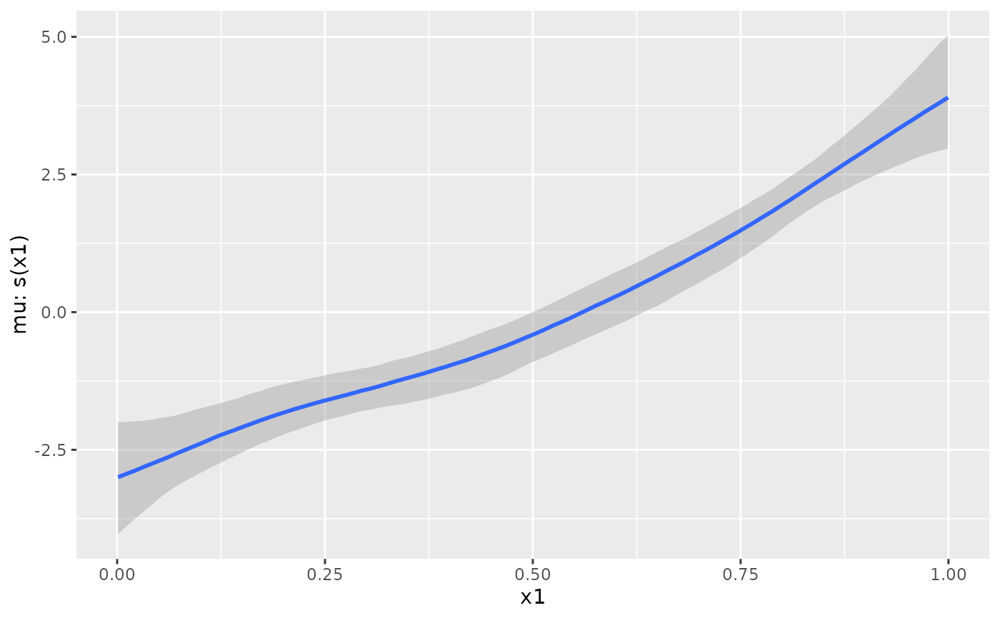
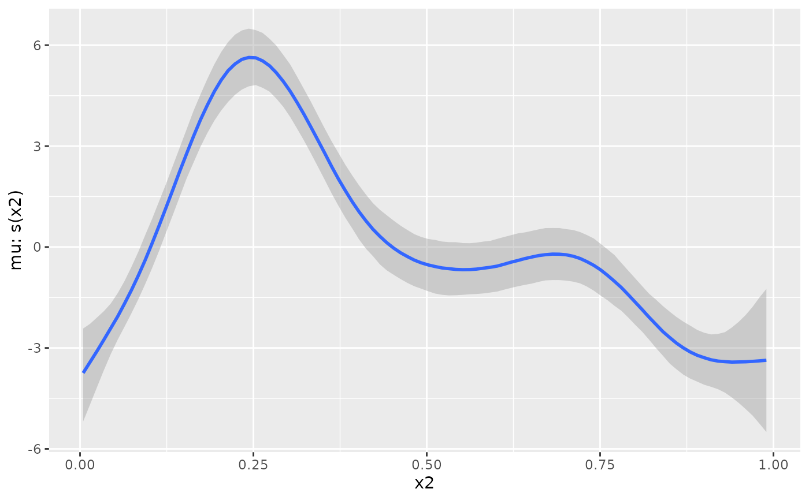
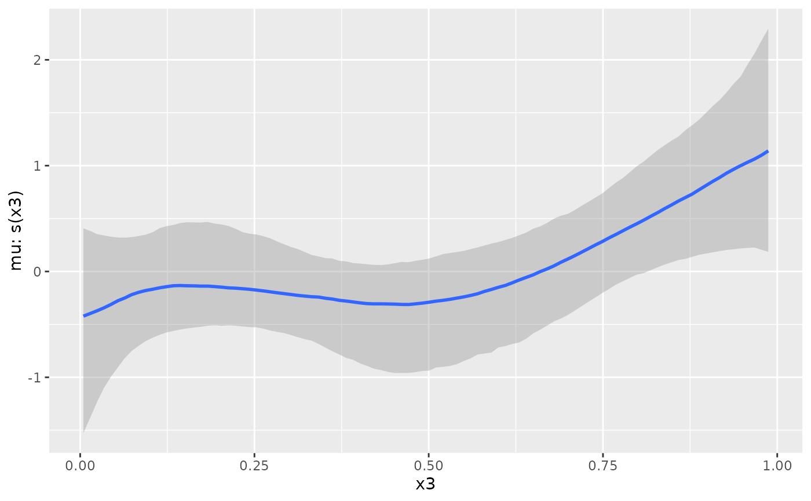
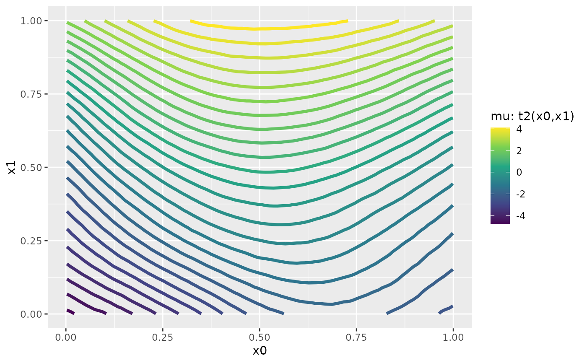
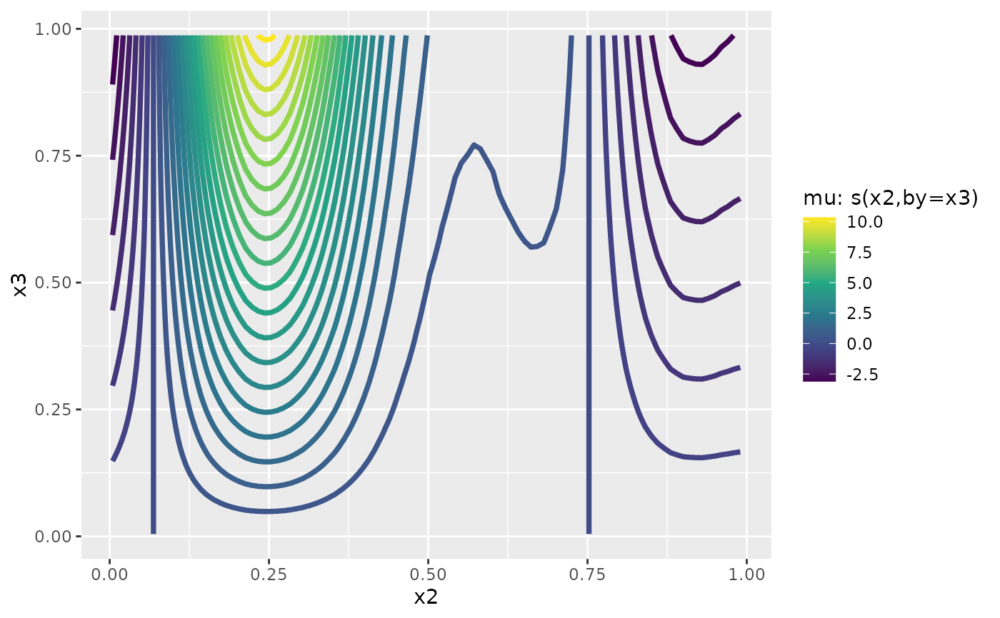

Functions used in definition of smooth terms within a model formulas. The function does not evaluate a (spline) smooth - it exists purely to help set up a model using spline based smooths.
Details
The function defined here are just simple wrappers of the respective
functions of the mgcv package. When using them, please cite the
appropriate references obtained via citation("mgcv").
brms uses the "random effects" parameterization of smoothing splines
as explained in mgcv::gamm. A nice tutorial on this
topic can be found in Pedersen et al. (2019). The answers provided in this
Stan discourse post
may also be helpful.
References
Pedersen, E. J., Miller, D. L., Simpson, G. L., & Ross, N. (2019). Hierarchical generalized additive models in ecology: an introduction with mgcv. PeerJ.
Examples
# \dontrun{
# simulate some data
dat <- mgcv::gamSim(1, n = 200, scale = 2)
#> Gu & Wahba 4 term additive model
# fit univariate smooths for all predictors
fit1 <- brm(y ~ s(x0) + s(x1) + s(x2) + s(x3),
data = dat, chains = 2)
#> Compiling Stan program...
#> Start sampling
#>
#> SAMPLING FOR MODEL 'anon_model' NOW (CHAIN 1).
#> Chain 1:
#> Chain 1: Gradient evaluation took 6.8e-05 seconds
#> Chain 1: 1000 transitions using 10 leapfrog steps per transition would take 0.68 seconds.
#> Chain 1: Adjust your expectations accordingly!
#> Chain 1:
#> Chain 1:
#> Chain 1: Iteration: 1 / 2000 [ 0%] (Warmup)
#> Chain 1: Iteration: 200 / 2000 [ 10%] (Warmup)
#> Chain 1: Iteration: 400 / 2000 [ 20%] (Warmup)
#> Chain 1: Iteration: 600 / 2000 [ 30%] (Warmup)
#> Chain 1: Iteration: 800 / 2000 [ 40%] (Warmup)
#> Chain 1: Iteration: 1000 / 2000 [ 50%] (Warmup)
#> Chain 1: Iteration: 1001 / 2000 [ 50%] (Sampling)
#> Chain 1: Iteration: 1200 / 2000 [ 60%] (Sampling)
#> Chain 1: Iteration: 1400 / 2000 [ 70%] (Sampling)
#> Chain 1: Iteration: 1600 / 2000 [ 80%] (Sampling)
#> Chain 1: Iteration: 1800 / 2000 [ 90%] (Sampling)
#> Chain 1: Iteration: 2000 / 2000 [100%] (Sampling)
#> Chain 1:
#> Chain 1: Elapsed Time: 6.408 seconds (Warm-up)
#> Chain 1: 5.374 seconds (Sampling)
#> Chain 1: 11.782 seconds (Total)
#> Chain 1:
#>
#> SAMPLING FOR MODEL 'anon_model' NOW (CHAIN 2).
#> Chain 2:
#> Chain 2: Gradient evaluation took 4.2e-05 seconds
#> Chain 2: 1000 transitions using 10 leapfrog steps per transition would take 0.42 seconds.
#> Chain 2: Adjust your expectations accordingly!
#> Chain 2:
#> Chain 2:
#> Chain 2: Iteration: 1 / 2000 [ 0%] (Warmup)
#> Chain 2: Iteration: 200 / 2000 [ 10%] (Warmup)
#> Chain 2: Iteration: 400 / 2000 [ 20%] (Warmup)
#> Chain 2: Iteration: 600 / 2000 [ 30%] (Warmup)
#> Chain 2: Iteration: 800 / 2000 [ 40%] (Warmup)
#> Chain 2: Iteration: 1000 / 2000 [ 50%] (Warmup)
#> Chain 2: Iteration: 1001 / 2000 [ 50%] (Sampling)
#> Chain 2: Iteration: 1200 / 2000 [ 60%] (Sampling)
#> Chain 2: Iteration: 1400 / 2000 [ 70%] (Sampling)
#> Chain 2: Iteration: 1600 / 2000 [ 80%] (Sampling)
#> Chain 2: Iteration: 1800 / 2000 [ 90%] (Sampling)
#> Chain 2: Iteration: 2000 / 2000 [100%] (Sampling)
#> Chain 2:
#> Chain 2: Elapsed Time: 6 seconds (Warm-up)
#> Chain 2: 5.097 seconds (Sampling)
#> Chain 2: 11.097 seconds (Total)
#> Chain 2:
summary(fit1)
#> Family: gaussian
#> Links: mu = identity
#> Formula: y ~ s(x0) + s(x1) + s(x2) + s(x3)
#> Data: dat (Number of observations: 200)
#> Draws: 2 chains, each with iter = 2000; warmup = 1000; thin = 1;
#> total post-warmup draws = 2000
#>
#> Smoothing Spline Hyperparameters:
#> Estimate Est.Error l-95% CI u-95% CI Rhat Bulk_ESS Tail_ESS
#> sds(sx0_1) 3.70 1.87 1.38 8.57 1.00 1108 1298
#> sds(sx1_1) 2.17 1.50 0.30 6.04 1.00 944 1225
#> sds(sx2_1) 21.50 6.49 12.13 37.29 1.00 571 1006
#> sds(sx3_1) 2.81 2.25 0.20 8.48 1.00 501 622
#>
#> Regression Coefficients:
#> Estimate Est.Error l-95% CI u-95% CI Rhat Bulk_ESS Tail_ESS
#> Intercept 7.67 0.15 7.36 7.96 1.00 3228 1477
#> sx0_1 4.01 6.88 -9.29 19.46 1.00 966 778
#> sx1_1 12.32 4.59 4.25 22.97 1.00 1097 1153
#> sx2_1 28.76 15.53 -3.03 59.01 1.00 1100 1423
#> sx3_1 7.08 7.08 -2.57 24.49 1.00 624 471
#>
#> Further Distributional Parameters:
#> Estimate Est.Error l-95% CI u-95% CI Rhat Bulk_ESS Tail_ESS
#> sigma 2.09 0.11 1.89 2.31 1.00 2783 1532
#>
#> Draws were sampled using sampling(NUTS). For each parameter, Bulk_ESS
#> and Tail_ESS are effective sample size measures, and Rhat is the potential
#> scale reduction factor on split chains (at convergence, Rhat = 1).
plot(conditional_smooths(fit1), ask = FALSE)




# fit a more complicated smooth model
fit2 <- brm(y ~ t2(x0, x1) + s(x2, by = x3),
data = dat, chains = 2)
#> Compiling Stan program...
#> Start sampling
#>
#> SAMPLING FOR MODEL 'anon_model' NOW (CHAIN 1).
#> Chain 1:
#> Chain 1: Gradient evaluation took 5.4e-05 seconds
#> Chain 1: 1000 transitions using 10 leapfrog steps per transition would take 0.54 seconds.
#> Chain 1: Adjust your expectations accordingly!
#> Chain 1:
#> Chain 1:
#> Chain 1: Iteration: 1 / 2000 [ 0%] (Warmup)
#> Chain 1: Iteration: 200 / 2000 [ 10%] (Warmup)
#> Chain 1: Iteration: 400 / 2000 [ 20%] (Warmup)
#> Chain 1: Iteration: 600 / 2000 [ 30%] (Warmup)
#> Chain 1: Iteration: 800 / 2000 [ 40%] (Warmup)
#> Chain 1: Iteration: 1000 / 2000 [ 50%] (Warmup)
#> Chain 1: Iteration: 1001 / 2000 [ 50%] (Sampling)
#> Chain 1: Iteration: 1200 / 2000 [ 60%] (Sampling)
#> Chain 1: Iteration: 1400 / 2000 [ 70%] (Sampling)
#> Chain 1: Iteration: 1600 / 2000 [ 80%] (Sampling)
#> Chain 1: Iteration: 1800 / 2000 [ 90%] (Sampling)
#> Chain 1: Iteration: 2000 / 2000 [100%] (Sampling)
#> Chain 1:
#> Chain 1: Elapsed Time: 8.252 seconds (Warm-up)
#> Chain 1: 10.657 seconds (Sampling)
#> Chain 1: 18.909 seconds (Total)
#> Chain 1:
#>
#> SAMPLING FOR MODEL 'anon_model' NOW (CHAIN 2).
#> Chain 2:
#> Chain 2: Gradient evaluation took 4.5e-05 seconds
#> Chain 2: 1000 transitions using 10 leapfrog steps per transition would take 0.45 seconds.
#> Chain 2: Adjust your expectations accordingly!
#> Chain 2:
#> Chain 2:
#> Chain 2: Iteration: 1 / 2000 [ 0%] (Warmup)
#> Chain 2: Iteration: 200 / 2000 [ 10%] (Warmup)
#> Chain 2: Iteration: 400 / 2000 [ 20%] (Warmup)
#> Chain 2: Iteration: 600 / 2000 [ 30%] (Warmup)
#> Chain 2: Iteration: 800 / 2000 [ 40%] (Warmup)
#> Chain 2: Iteration: 1000 / 2000 [ 50%] (Warmup)
#> Chain 2: Iteration: 1001 / 2000 [ 50%] (Sampling)
#> Chain 2: Iteration: 1200 / 2000 [ 60%] (Sampling)
#> Chain 2: Iteration: 1400 / 2000 [ 70%] (Sampling)
#> Chain 2: Iteration: 1600 / 2000 [ 80%] (Sampling)
#> Chain 2: Iteration: 1800 / 2000 [ 90%] (Sampling)
#> Chain 2: Iteration: 2000 / 2000 [100%] (Sampling)
#> Chain 2:
#> Chain 2: Elapsed Time: 9.031 seconds (Warm-up)
#> Chain 2: 10.122 seconds (Sampling)
#> Chain 2: 19.153 seconds (Total)
#> Chain 2:
#> Warning: There were 14 divergent transitions after warmup. See
#> https://mc-stan.org/misc/warnings.html#divergent-transitions-after-warmup
#> to find out why this is a problem and how to eliminate them.
#> Warning: Examine the pairs() plot to diagnose sampling problems
summary(fit2)
#> Warning: There were 14 divergent transitions after warmup. Increasing adapt_delta above 0.8 may help. See http://mc-stan.org/misc/warnings.html#divergent-transitions-after-warmup
#> Family: gaussian
#> Links: mu = identity
#> Formula: y ~ t2(x0, x1) + s(x2, by = x3)
#> Data: dat (Number of observations: 200)
#> Draws: 2 chains, each with iter = 2000; warmup = 1000; thin = 1;
#> total post-warmup draws = 2000
#>
#> Smoothing Spline Hyperparameters:
#> Estimate Est.Error l-95% CI u-95% CI Rhat Bulk_ESS Tail_ESS
#> sds(t2x0x1_1) 2.56 2.17 0.12 8.16 1.00 1099 1130
#> sds(t2x0x1_2) 4.06 2.95 0.15 11.46 1.00 702 604
#> sds(t2x0x1_3) 6.92 3.37 1.79 15.45 1.00 868 618
#> sds(sx2x3_1) 32.18 11.24 15.99 58.12 1.00 666 834
#>
#> Regression Coefficients:
#> Estimate Est.Error l-95% CI u-95% CI Rhat Bulk_ESS Tail_ESS
#> Intercept 6.58 0.39 5.79 7.35 1.00 2097 1246
#> t2x0x1_1 -1.93 0.24 -2.40 -1.45 1.00 2140 1447
#> t2x0x1_2 -0.42 0.23 -0.90 0.03 1.00 2320 1365
#> t2x0x1_3 -0.19 0.27 -0.73 0.34 1.00 2013 1468
#> sx2:x3_1 25.27 31.90 -44.67 81.72 1.00 1062 1136
#> sx2:x3_2 26.60 19.68 -11.51 64.82 1.00 1127 1215
#>
#> Further Distributional Parameters:
#> Estimate Est.Error l-95% CI u-95% CI Rhat Bulk_ESS Tail_ESS
#> sigma 2.65 0.14 2.39 2.95 1.00 2500 1582
#>
#> Draws were sampled using sampling(NUTS). For each parameter, Bulk_ESS
#> and Tail_ESS are effective sample size measures, and Rhat is the potential
#> scale reduction factor on split chains (at convergence, Rhat = 1).
plot(conditional_smooths(fit2), ask = FALSE)


# }